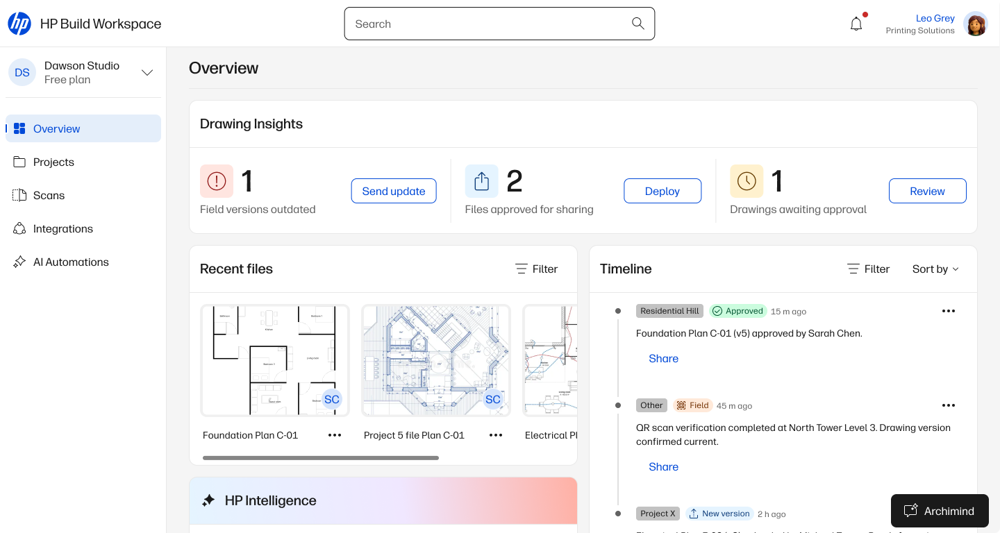
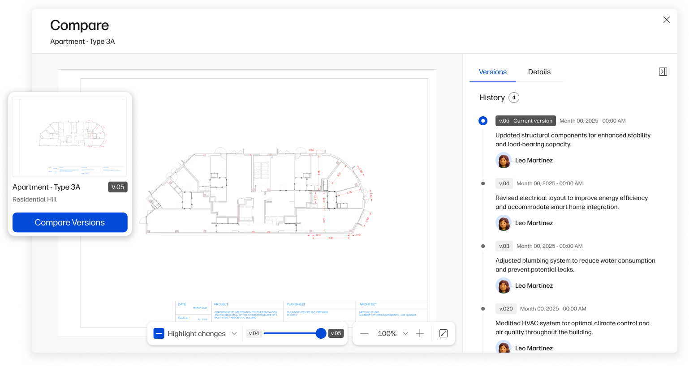

Making sure the right drawing is what gets built
Redesigning Build workspace architecture around the real workflow of construction teams
Hero — GC workflow overview
Redesigning Build workspace architecture around the real workflow of construction teams
HP Build Workspace is a cloud platform that helps construction teams manage drawings — keeping everyone aligned on the latest version, from the architect's office to the construction site. It connects the people who design the plans with the teams responsible for executing them.
HP Build had the foundations of a solid product — but adoption wasn't where it needed to be. The product was built around creating and storing drawings, which served architects well. But the people with the most to gain from it had different needs that the product wasn't addressing yet.
The real opportunity was with the project manager and site team — not the people creating drawings, but the ones responsible for getting them to the right place at the right time.
Leo
Architect
Jade
Project Manager
GC · Target userRyan
Site Manager
GC · Target userPete
Foreman
If you'd like to see the full case study including design decisions, flows, and before/after screens, get in touch or enter the password below.
That's not quite right — try again or get in touch.
01
Why
Surfacing priority actions upfront wasn't just a UX decision — it was the foundation that made the other flows possible. Without visibility, nothing else works.
A simple project list with no status, no priority signals, and no way to know what needed attention.

A dashboard overview surfacing priority actions, deadlines, and project health at a glance.

02
Why
Making comparison the default view when opening a new version removes a step that was easy to skip but costly when skipped. On a complex drawing, a missed change can mean rework on site.
Users compared versions manually — printing both drawings side by side or toggling between tabs to spot differences.
Version comparison is now the default view when opening a new drawing version — no extra steps needed.

03
Why
The QR is the bridge between the physical and digital world. A printed drawing is no longer disconnected from its digital version.
Workers on site had no way to confirm if the drawing they were looking at was the latest version.
Scanning a QR code on the printed drawing instantly confirms the version and flags if a newer one exists.
Some of this is live. Some is in development. Some is still ahead.
The next step in this story connects directly to the following case study — letting site teams scan physical drawings from the HP printer straight into HP Build, turning paper into a digital, editable file without any manual steps.
This project is still in progress. What I can point to is the shift in what the product is designed around — from managing files, to managing the flow of information between people.
The before/after that matters most is the question the product now answers for its users: not "where is my drawing?" but "is everyone working from the right one?"